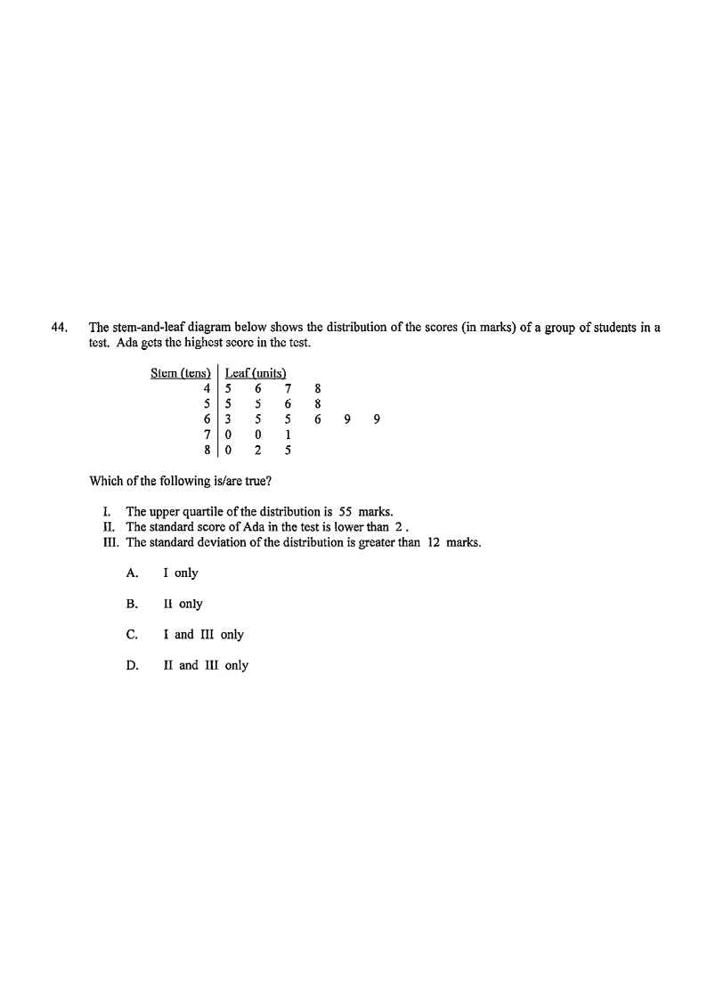

Statistics — Stem-and-Leaf Diagram, Quartiles & Standard Score
The stem-and-leaf diagram below shows the distribution of the scores (in marks) of a group of students in a test. Ada gets the highest score in the test.
| Stem (tens) | Leaf (units) |
|---|---|
| 4 | 5 6 7 8 |
| 5 | 5 5 6 8 |
| 6 | 3 5 5 6 9 9 |
| 7 | 0 0 1 |
| 8 | 0 2 5 |
Which of the following is/are true?

Each entry is stem \(\times 10\) + leaf. For example, stem \(5\) leaf \(8\) means \(58\) marks. Count the leaves: there are \(4+4+6+3+3=20\) students.
Statement I claims: “The upper quartile of the distribution is 55 marks.”
List all \(20\) data in ascending order:
\[45,\ 46,\ 47,\ 48,\ 55,\ 55,\ 56,\ 58,\ 63,\ 65,\ 65,\ 66,\ 69,\ 69,\ 70,\ 70,\ 71,\ 80,\ 82,\ 85\]For \(n=20\), the upper quartile \(Q_3\) is taken as the mean of the \(15\)th and \(16\)th ordered data (i.e. \(\tfrac{3(n+1)}{4} = 15.75\), interpolating between these two).
\[\text{15th} = 70, \qquad \text{16th} = 70\] \[Q_3 = \frac{70 + 70}{2} = 70 \text{ marks}\]Statement II claims: “The standard score of Ada in the test is lower than 2.” Ada gets the highest score, \(85\).
Find the mean \(\bar x\) of all 20 scores:
\[\bar x=\frac{45+46+47+48+55+55+56+58+63+65+65+66+69+69+70+70+71+80+82+85}{20}\]Sum \(=1265\), so
\[\bar x=\frac{1265}{20}=63.25 \text{ marks}\]Compute the standard deviation
\[\sigma=\sqrt{\frac{\sum (x-\bar x)^2}{20}}\] \[(45-63.25)^2+(46-63.25)^2+(47-63.25)^2+(48-63.25)^2\] \[+(55-63.25)^2+(55-63.25)^2+(56-63.25)^2+(58-63.25)^2\] \[+(63-63.25)^2+(65-63.25)^2+(65-63.25)^2+(66-63.25)^2\] \[+(69-63.25)^2+(69-63.25)^2+(70-63.25)^2+(70-63.25)^2\] \[+(71-63.25)^2+(80-63.25)^2+(82-63.25)^2+(85-63.25)^2\]Ada's standard score with \(x=85\):
\[z=\frac{85-63.25}{11.5753}=\frac{21.75}{11.5753}\approx 1.879\]Statement III claims: “The standard deviation of the distribution is greater than 12 marks.”
From Part II we already computed:
\[\sigma=\sqrt{133.9875}=11.57529697\ldots \text{ marks}\]Collect the verdicts on the three statements: